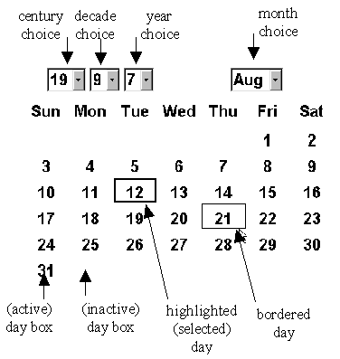

The DatePanel component - overview

The four choice components at the top of the interface allow the
year and the month to be selected. Below it lies the MonthPanel
which contains the day names and an iteration of DayBoxes.
A DayBox can be active
if it currently indicating a day of the month or inactive
if it isn't. Whenever a new year or month is selected the pattern
of active an inactive boxes will change as appropriate to the
new year and month indicated.
At all times one, and only one, DayBox is
highlighted (selected) and is shown with a heavy border. Additionally, if the
mouse pointer is located over an active box, it is
shown with a lighter border. The bordered box can become
the selected box by clicking upon it.
Whenever the date is changed, whether by changing the selected
box or by changing the year or month, the component will generate
an ActionEvent.